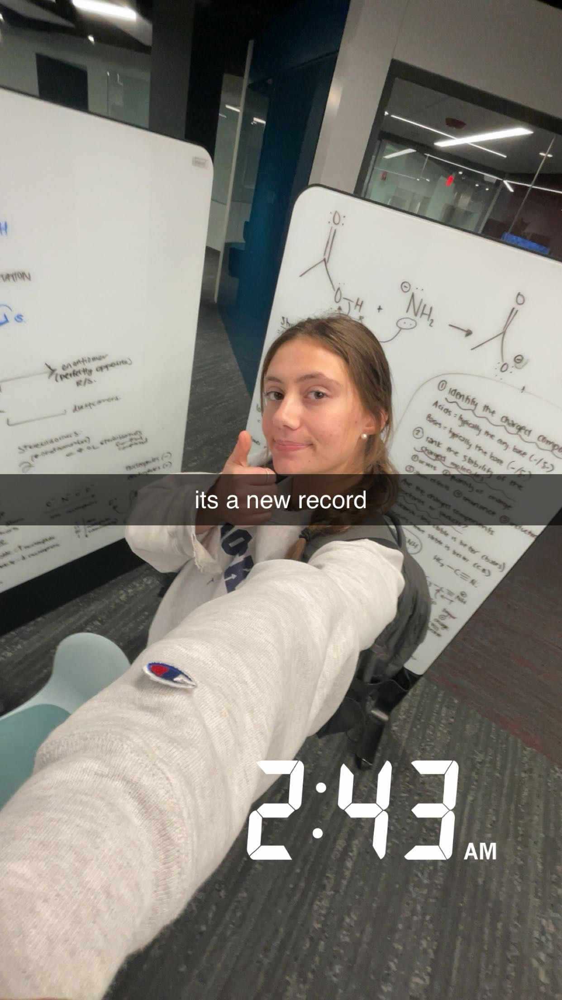

As mentioned, I spend a lot of my time studying. Some of the hardest classes I've taken during my time at Northeastern include:
Many of my classes are typically workload-heavy and require multiple midterms during the semester. Some weeks, I spend upwards of 15 hours outside of class studying, although I already spend a good deal of my time in lectures or in labs.
Thankfully, I've found that Snell Library is a wonderful environment for me to put my head down and grind when I need to. I've made many memories in Snell over the past 3 years, including countless late nights and even one all-nighter.

This picture is from last fall, when I was taking organic chemistry I. This was the beginning of normalizing late nights at Snell – almost a year later, the record is around 11 am, which refers to the time during finals week I crammed for a final in my elective class all night, from 8 pm - 11 am, and went straight to the final (I got an A in the class, so it was worth it).
You may be wondering, "how do you stay awake so late studying in the library?" The answer is caffeine and anxiety. I hate performing poorly in school, and as long as I have an energy drink to fuel me, I can work for hours.
Even though these nights are miserable (like truly, so terrible), I am hopeful that I will look back fondly on them and laugh when I remember scribbling frantically across the Snell whiteboards at 3 am on a random Tuesday.
Sabina Saxe
Email: saxe.s@northeastern.edu